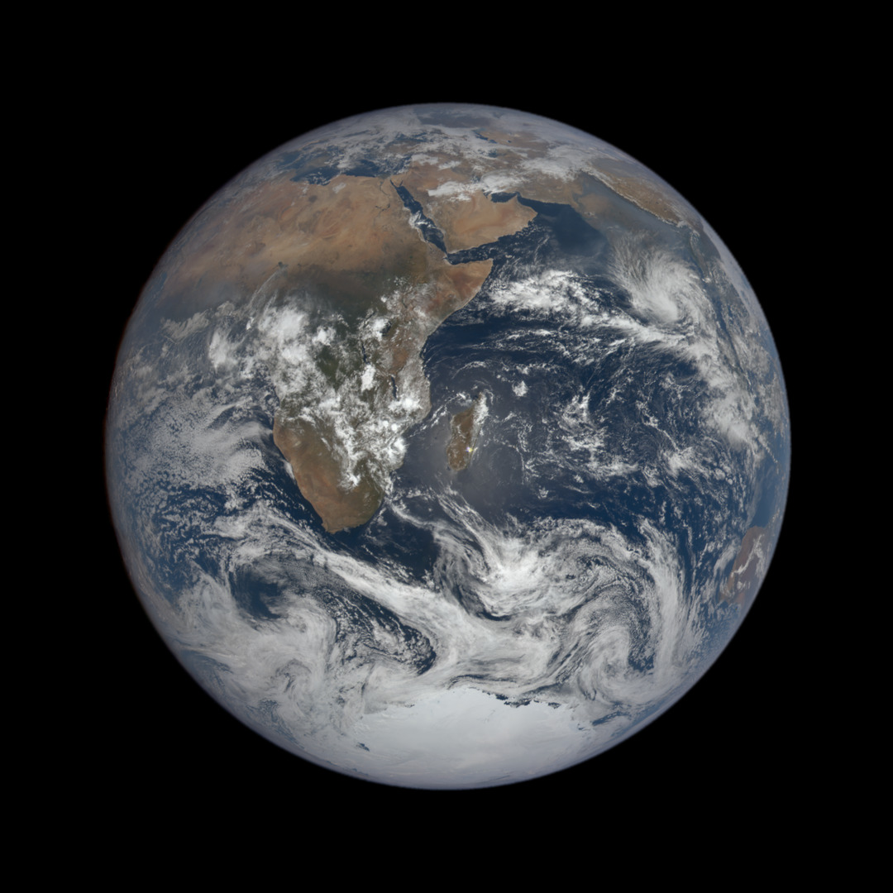

Endril · Tools
Solar System
以光年丈量宇宙 · 用指尖触碰星辰
01
真实轨道数据
NASA JPL 星历驱动
八大行星实时位置模拟
02
沉浸式探索
自由缩放 · 时间加速
从太阳到冥王星一镜到底
03
航天科学
NASA Eyes / 开源项目
MIT 协议 · 三维交互
▶ NASA Eyes 太阳系
Solar-Wanderer 源码
返回 Endril
背景影像：NASA ISS Ultra-HD Earth / DSCOVR EPIC（公共领域） · svs.gsfc.nasa.gov / epic.gsfc.nasa.gov